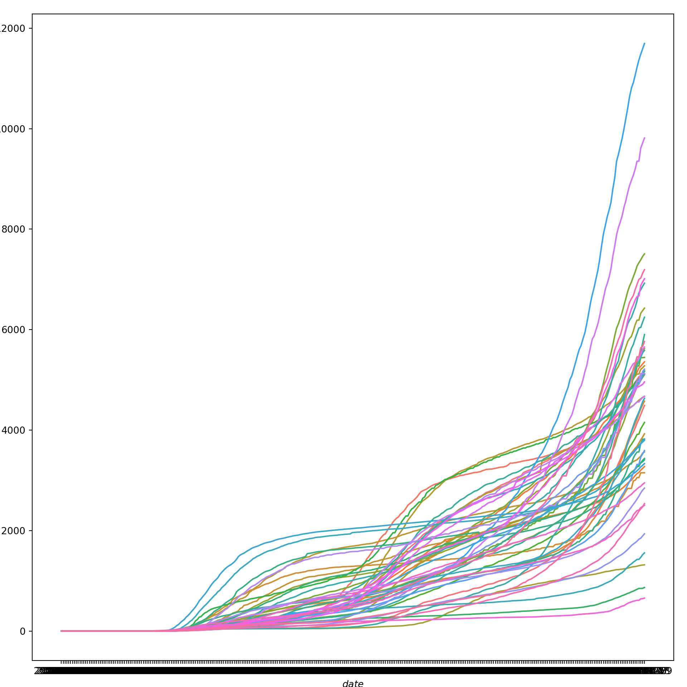

DAY 2: Data visualization (Python)
The COVID-19 cases data we have are inherently temporal and spatial. Let’s explore the space and time dimensions of the case data through visualization.
Non-spatial graphs
Let’s load the daily cases data we cleaned yesterday:
We can easily create a wide range of non-spatial graphs using the seaborn module. We can start with a very simple line graph of the COVID-19 cases rates over time:
# line graph of covid cases rates
sns.lineplot('date', 'cases_rate_100K', data = US_states_cases_selected, hue='state', legend=False)
plt.xlabel("$date$", fontsize=10)
plt.ylabel("$cases_rate_100K$", fontsize=10, rotation=90)
plt.show()This gives us an overall sense that the rate of cases has increased over time and has become particularly prevalent in the fall of 2020. But, because the lines for each state are not discernible, we can’t see if some states have a different trajectory of case rates than other states. A better solution is to use faceting to produce mini-plots for each state.
Let’s create a new line graph of COVID-19 cases rates over time, this time with a separate mini-plot for each state:
# line graphs of covid cases rates for each state
state_group = US_states_cases_selected["state"].value_counts().index.tolist()
state_group.sort()
num_state_group = len(state_group)
if num_state_group % 8 == 0:
rows = math.ceil(num_state_group/8) + 1
else:
rows = math.ceil(num_state_group/8)
fig, axs = plt.subplots(rows, 8, squeeze=False, sharex=True, figsize=(10, 10))
fig.tight_layout()
fig.text(0.5, 0.02, 'date', ha='center')
fig.text(0.005, 0.5, 'cases_rate_100K', va='center', rotation='vertical')
for i in range(len(state_group)):
quodient = i//8
remainder = i % 8
focal_sample = state_group[i]
temp = US_states_cases_selected.loc[(US_states_cases_selected.state == focal_sample), :]
axs[quodient,remainder].plot(temp['date'], temp['cases_rate_100K'])
axs[quodient,remainder].set_xticks(temp['date'], minor=True)
axs[quodient,remainder].set_title(label=focal_sample, loc='center', fontsize="x-small")
if remainder != 5:
for j in range(remainder + 1, 8):
fig.delaxes(axs[quodient, j])
plt.show()We can try the same strategy for cumulative COVID-19 case rates over time. First, in a graph that jumbles together all the states:
# line graph of cumulative covid cases rates
sns.lineplot('date', 'cases_cum_rate_100K', data = US_states_cases_selected, hue='state', legend=False)
plt.xlabel("$date$", fontsize=10)
plt.ylabel("$cases_cum_rate_100K$", fontsize=10, rotation=90)
plt.show()
Again, we get a sense of the overall trend here, but we can get a much better picture of state-level differences by faceting. So, let’s create a new line graph of COVID-19 cumulative cases rates over time, this time with a separate mini-plot for each state:
# line graphs of cumulative covid cases rates for each state
state_group_cum = US_states_cases_selected["state"].value_counts().index.tolist()
state_group_cum.sort()
num_state_group_cum = len(state_group_cum)
if num_state_group_cum % 8 == 0:
rows = math.ceil(num_state_group_cum/8) + 1
else:
rows = math.ceil(num_state_group_cum/8)
fig, axs = plt.subplots(rows, 8, squeeze=False, sharex=True, figsize=(10, 10))
fig.tight_layout()
fig.text(0.5, 0.02, 'date', ha='center')
fig.text(0.005, 0.5, 'cases_cum_rate_100K', va='center', rotation='vertical')
for i in range(len(state_group_cum)):
quodient = i//8
remainder = i % 8
focal_sample = state_group_cum[i]
temp = US_states_cases_selected.loc[(US_states_cases_selected.state == focal_sample), :]
axs[quodient,remainder].plot(temp['date'], temp['cases_cum_rate_100K'])
axs[quodient,remainder].set_xticks(temp['date'], minor=True)
axs[quodient,remainder].set_title(label=focal_sample, loc='center', fontsize="x-small")
if remainder != 5:
for j in range(remainder + 1, 8):
fig.delaxes(axs[quodient, j])
plt.show()Static Maps
A great way to visualize spatial relationships in data is to superimpose variables onto a map. For some datasets, this could involve superimposing points or lines. For our state-level data, this will involve coloring state polygons in proportion to a variable of interest that represents an aggregate summary of a geographic characteristic within each state. Such a graph is often referred to as a choropleth map. To create a choropleth map we first need to acquire shapefiles that contain spatial data about U.S. state-level geographies.
We can use the Census Tiger shape files for census geographies. We want state-level geographies, which we can download by putting the following URL into our browser: https://www2.census.gov/geo/tiger/TIGER2019/STATE/tl_2019_us_state.zip. We then need to unzip the directory to gain access to the shapefile named tl_2019_us_state.shp.
Alternatively, we can do this programmatically using the UNIX bash shell, either using wget or, in this example, curl:
# make a new directory for the shapefiles
mkdir shapefiles
# move to the new directory
cd shapefiles
# download the zipped shapefiles
curl -sS https://www2.census.gov/geo/tiger/TIGER2019/STATE/tl_2019_us_state.zip > file.zip
# unzip the shapefiles
unzip file.zip
# remove the zipped directory
rm file.zipLet’s read the shapefile and clean it:
# read the shapefile
us_state_geo = geopandas.read_file('shapefiles/tl_2019_us_state.shp')
# rename `NAME` variable to `state`
us_state_geo = us_state_geo.rename(columns={'NAME':'state'})
# clean
us_state_geo[["GEOID"]] = us_state_geo[["GEOID"]].apply(pd.to_numeric)
us_state_geo = us_state_geo[(us_state_geo.GEOID < 60) & (us_state_geo.state != "Alaska") & (us_state_geo.state != "Hawaii")]
print(us_state_geo.head(20))
# us_state_geo = us_state_geo.to_crs("EPSG:3395")## REGION ... geometry
## 0 3 ... POLYGON ((-81.74725 39.09538, -81.74635 39.096...
## 1 3 ... MULTIPOLYGON (((-86.38865 30.99418, -86.38385 ...
## 2 2 ... POLYGON ((-91.18529 40.63780, -91.17510 40.643...
## 3 2 ... POLYGON ((-96.78438 46.63050, -96.78434 46.630...
## 4 3 ... POLYGON ((-77.45881 39.22027, -77.45866 39.220...
## 5 1 ... MULTIPOLYGON (((-71.78970 41.72520, -71.78971 ...
## 6 4 ... POLYGON ((-116.89971 44.84061, -116.89967 44.8...
## 7 1 ... POLYGON ((-72.32990 43.60021, -72.32984 43.600...
## 8 3 ... POLYGON ((-82.41674 36.07283, -82.41660 36.073...
## 9 1 ... POLYGON ((-73.31328 44.26413, -73.31274 44.265...
## 10 1 ... POLYGON ((-73.51808 41.66672, -73.51807 41.666...
## 11 3 ... POLYGON ((-75.76007 39.29682, -75.76010 39.297...
## 12 4 ... POLYGON ((-106.00632 36.99527, -106.00531 36.9...
## 13 4 ... MULTIPOLYGON (((-124.13656 41.46445, -124.1378...
## 14 1 ... POLYGON ((-75.18960 40.59178, -75.18977 40.592...
## 15 2 ... POLYGON ((-92.88707 45.64415, -92.88671 45.644...
## 16 4 ... POLYGON ((-124.06545 45.78305, -124.06206 45.7...
## 17 2 ... POLYGON ((-104.05264 42.00172, -104.05263 42.0...
## 18 1 ... POLYGON ((-80.51935 41.84956, -80.51938 41.850...
## 19 4 ... POLYGON ((-123.24792 48.28456, -123.24751 48.2...
##
## [20 rows x 15 columns]Now let’s read in the weekly cases data we cleaned yesterday:
# use previously cleaned weekly dataset
US_states_cases_week = pd.read_csv("data_py/US_states_cases_week.csv")We can now merge the spatial data with our weekly COVID-19 cases data, keeping only the contiguous 48 states (plus D.C.):
# merge weekly COVID-19 cases with spatial data
US_states_cases_week[["GEOID"]] = US_states_cases_week[["GEOID"]].apply(pd.to_numeric)
data_frames = [us_state_geo, US_states_cases_week]
US_cases_long_week_spatial = reduce(lambda left,right: pd.merge(left,right,on=['GEOID', 'state'], how='left'), data_frames)
# filter out some states and subset data for only latest week
US_cases_long_week_spatial = US_cases_long_week_spatial[(US_cases_long_week_spatial.GEOID < 60) & (US_cases_long_week_spatial.state != "Alaska") & (US_cases_long_week_spatial.state != "Hawaii")]
US_cases_long_week_spatial = US_cases_long_week_spatial[US_cases_long_week_spatial.week_of_year == max(US_cases_long_week_spatial.week_of_year)]
print(US_cases_long_week_spatial.head(20))## REGION DIVISION ... cases_count_pos cases_rate_100K
## 44 3 5 ... 6519.0 351.809018
## 89 3 5 ... 54246.0 288.522449
## 134 2 3 ... 64085.0 499.468771
## 179 2 4 ... 42815.0 807.232380
## 224 3 5 ... 14245.0 246.728530
## 269 1 1 ... 5953.0 565.569698
## 314 4 8 ... 8823.0 562.841370
## 359 1 1 ... 2882.0 218.918775
## 404 3 5 ... 25141.0 263.657331
## 449 1 1 ... 471.0 75.270759
## 494 1 1 ... 11112.0 310.903705
## 539 3 5 ... 3443.0 383.435754
## 584 4 8 ... 13521.0 656.620915
## 629 4 9 ... 100844.0 270.693400
## 674 1 2 ... 28124.0 319.885567
## 719 2 3 ... 32816.0 577.036764
## 764 4 9 ... 8950.0 233.615952
## 809 2 4 ... 12405.0 679.226935
## 854 1 2 ... 47599.0 374.725081
## 899 4 9 ... 18630.0 277.044973
##
## [20 rows x 22 columns]Let’s create a choropleth map for the latest week’s COVID-19 cases using the Matplotlib module:
# set the value column that will be visualised
variable = 'cases_rate_100K'
# set the range for the choropleth values
vmin, vmax = 0, 600
# create figure and axes for Matplotlib
fig, ax = plt.subplots(1, figsize=(15, 15))
# remove the axis
ax.axis('off')
# add a title and annotation## (0.0, 1.0, 0.0, 1.0)ax.set_title('COVID-19 cases rates for last week', fontdict={'fontsize': '15', 'fontweight' : '3'})
ax.annotate('Data Sources: Harvard Dataverse, 2020; U.S. Census Bureau, 2019', xy=(0.6, .05), xycoords='figure fraction', fontsize=12, color='#555555')
# create an axes on the right side of ax. The width of cax will be 3% of ax and the padding between cax and ax will be fixed at 0.05 inch.
divider = make_axes_locatable(ax)
cax = divider.append_axes("right", size="3%", pad=0.05)
# Create colorbar legend
legend = plt.cm.ScalarMappable(cmap='Greens', norm=plt.Normalize(vmin=vmin, vmax=vmax))
# empty array for the data range
legend.set_array([]) # or alternatively sm._A = []. Not sure why this step is necessary, but many recommends it
# add the colorbar to the figure
fig.colorbar(legend, cax=cax)
#fig.colorbar(legend)
# create map## <matplotlib.colorbar.Colorbar object at 0x1847728d0>Interactive Maps
Static maps are great for publications. Interactive maps, which can be viewed in a browser, can potentially provide a much richer source of information.
Firstly, we need to create a function to get the polygon x and y coordinates:
def getPolyCoords(row, geom, coord_type):
"""Returns the coordinates ('x|y') of edges/vertices of a Polygon/others"""
# Parse the geometries and grab the coordinate
geometry = row[geom]
#print(geometry.type)
if geometry.type=='Polygon':
if coord_type == 'x':
# Get the x coordinates of the exterior
# Interior is more complex: xxx.interiors[0].coords.xy[0]
return list( geometry.exterior.coords.xy[0] )
elif coord_type == 'y':
# Get the y coordinates of the exterior
return list( geometry.exterior.coords.xy[1] )
if geometry.type in ['Point', 'LineString']:
if coord_type == 'x':
return list( geometry.xy[0] )
elif coord_type == 'y':
return list( geometry.xy[1] )
if geometry.type=='MultiLineString':
all_xy = []
for ea in geometry:
if coord_type == 'x':
all_xy.extend(list( ea.xy[0] ))
elif coord_type == 'y':
all_xy.extend(list( ea.xy[1] ))
return all_xy
if geometry.type=='MultiPolygon':
all_xy = []
for ea in geometry:
if coord_type == 'x':
all_xy.extend(list( ea.exterior.coords.xy[0] ))
elif coord_type == 'y':
all_xy.extend(list( ea.exterior.coords.xy[1] ))
return all_xy
else:
# Finally, return empty list for unknown geometries
return []Now let’s use our function to get the Polygon x and y coordinates:
# use our function to get the Polygon x and y coordinates
US_cases_long_week_spatial['x'] = US_cases_long_week_spatial.apply(getPolyCoords, geom='geometry', coord_type='x', axis=1)
US_cases_long_week_spatial['y'] = US_cases_long_week_spatial.apply(getPolyCoords, geom='geometry', coord_type='y', axis=1)
# show only head of x and y columns
print(US_cases_long_week_spatial[['x', 'y']].head(2))
# make a copy, drop the geometry column and create ColumnDataSource## x y
## 44 [-81.747254, -81.746354, -81.746254, -81.74605... [39.095379, 39.096578, 39.096878, 39.096978, 3...
## 89 [-86.388646, -86.383854, -86.37907, -86.378965... [30.994180999999998, 30.994235999999997, 30.99...US_cases_long_week_spatial_df = US_cases_long_week_spatial.drop('geometry', axis=1).copy()
gsource = ColumnDataSource(US_cases_long_week_spatial_df)In this section, we’ll focus on building a simple interactive map using the geopandas module.
# create the color mapper
color_mapper = LogColorMapper(palette=palette)
# initialize our figure
p = figure(title="COVID-19 cases rates for last week", plot_width=1200, plot_height=800)
# Plot grid
p.patches('x', 'y', source=gsource, fill_color={'field': 'cases_rate_100K', 'transform': color_mapper}, fill_alpha=1.0, line_color="black", line_width=0.05)
# create a color bar## GlyphRenderer(id='1039', ...)color_bar = ColorBar(color_mapper=color_mapper, width=16, location=(0,0))
# add color bar to map
p.add_layout(color_bar, 'right')
# initialize our tool for interactivity to the map
my_hover = HoverTool()
# tell to the HoverTool that what information it should show to us
my_hover.tooltips = [('name', '@state'), ('cases rate', '@cases_rate_100K')]
# add this new tool into our current map
p.add_tools(my_hover)
# save the map
output_file("data_py/covid-19_map_hover.html")
save(p)
# show the map## '/Users/sworthin/Documents/IQSS/datafest-project/data_py/covid-19_map_hover.html'